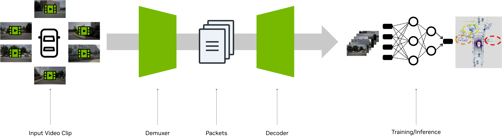

Introduction
The accvlab.on_demand_video_decoder package provides hardware-accelerated GPU on-demand decoding
capabilities for NVIDIA GPUs.
The package internally leverages the Video Codec SDK’s core C/C++ video decode APIs and provides user-friendly Python interfaces. The package offers efficient and convenient methods for video frame extraction.

Target Use Cases
This package is specifically designed for scenarios that demand high video decoding throughput, including:
Autonomous Driving: Process large volumes of video data for training perception models
Multimodal Large Language Models (MLLMs): Efficiently extract video frames for vision-language training
Video Understanding: Enable high-throughput video analysis for inference and training workloads
Additional Scenarios Sensitive to Video-Decode Throughput
Key Benefits
1. Massive Storage Savings
Traditional workflows require extracting video frames and storing them as individual images on disk before training. This package eliminates this step by decoding frames on-demand directly from video files, saving approximately 90% of disk storage with negligible performance overhead.
2. Reduced CPU Overhead
By offloading video decoding tasks to NVIDIA’s dedicated NVDEC hardware decoder, this package frees up CPU resources (~20%) for other critical training pipeline operations, improving overall system performance.
3. Flexible Decoding Methods
accvlab.on_demand_video_decoder provides multiple decoding modes optimized for different workload
patterns:
Random Decode: Optimized for large-batch scenarios with random video selection and random frame sampling
Stream Decode: Optimized for large-batch sequential frame decoding from videos
Separate Decode: Decouples demuxer and decoder components, enabling flexible configuration of the video decoding pipeline
Demuxer-Free Decode: Optimized for direct GOP (Group of Pictures) reading scenarios, balancing latency and storage efficiency
4. Seamless Integration with PyTorch
accvlab.on_demand_video_decoder integrates efficiently with PyTorch, and detailed examples are provided to
help users quickly integrate the package and boost workload performance.
Features
Functional Features
Codecs: H.264, HEVC, AV1.
Surface formats: NV12 (8 bit), YUV 4:2:0 (10 bit), YUV 4:4:4 (8 and 10 bit).
Video container formats: MP4, MOV, FLV, etc.
DLPack support to facilitate data exchange with popular DL frameworks like PyTorch and TensorRT.
Contains Python sample applications demonstrating API usage.
Flexible decode method (random, stream, demuxer-decoder separation, decoder-only)
High-Performance Features
Caching: Re-use of Demuxers, Decoders, Packets & internally used data
Map-free: Avoid memory mapping for unneeded frames
Use GPU Memory Pool: Avoid frequent memory re-allocation (re-allocate only if total needed memory increases)
Producer-Customer Model: Demuxer as producer, decoder as consumer, GOP as products.
NVDEC Pipeline: Pipeline utilizes all NVDEC units while ensuring load balancing with non-uniform GOP length
Getting Started
Please refer to the following sections to get started:
Acknowledgements
The accvlab.on_demand_video_decoder package builds upon and integrates with several key technologies:
FFmpeg: A complete, cross-platform solution for video and audio processing that provides essential multimedia framework capabilities
PyNvVideoCodec: NVIDIA’s Python bindings for video codec operations
NVIDIA Video Codec SDK: The underlying SDK that provides hardware-accelerated video encode and decode capabilities on NVIDIA GPUs
We are grateful to these projects and the open-source community for making high-performance video processing accessible.